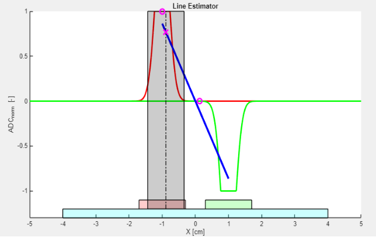

Lab 6 - Line Estimation
Responsible: Ing. Adam Ligocki, Ph.D.
Line sensor usage (1 h)
In this section, you will create a basic interface to the line sensor backend and inspect raw data.
Line sensor explained
We use the TCRT5000 reflective line sensor.
It consists of an infrared LED and a phototransistor placed next to each other. The LED emits IR light; a reflective surface (e.g., a white line) bounces light back to the phototransistor. The amount of reflected light depends on the surface, so the sensor distinguishes light vs. dark areas. By reading the phototransistor output, your code can decide whether the sensor is over a reflective (light) line or a non‑reflective (dark) background.

Image source: https://osoyoo.com/2017/08/15/tcrt5000-infrared-line-tracking-sensor/
To interpret the output value, study the following characteristic curve.

- Over a dark line: little IR returns, the phototransistor is off, and the analog output voltage is high.
- Over a white (reflective) surface: more IR returns, the phototransistor conducts, and the analog output voltage is low (near ground on A0).
Discuss the slope of the curve and the usable range for your application.
Differential sensor usage
Consider using two line sensors in a differential configuration. Treat one sensor as positive and the other as negative. With a clever placement, summing their outputs gives a good estimate of the robot’s lateral position relative to the line.

What about the gap between sensors? How does it affect the line‑following behavior?
Line node implementation
Implement a LineNode class that receives data and encapsulates the line estimation for the rest of the program.
- Create new files according to your project’s conventions.
- Subscribe to the topic
/bpc_prp_robot/line_sensors. - Message type:
std_msgs::msg::UInt16MultiArray.
// Public API sketch; adapt to your project
enum class DiscreteLinePose {
LineOnLeft,
LineOnRight,
LineNone,
LineBoth,
};
class LineNode : public rclcpp::Node {
public:
LineNode();
~LineNode();
// Relative pose to line [m]
float get_continuous_line_pose() const;
DiscreteLinePose get_discrete_line_pose() const;
private:
rclcpp::Subscription<std_msgs::msg::UInt16MultiArray>::SharedPtr line_sensors_subscriber_;
void on_line_sensors_msg(const std_msgs::msg::UInt16MultiArray::SharedPtr& msg);
float estimate_continuous_line_pose(float left_value, float right_value);
DiscreteLinePose estimate_discrete_line_pose(float l_norm, float r_norm);
};
Run the program and print the measured values for verification.
Line position estimation (1 h)
Now focus on estimating the line position. Create a class that encapsulates the algorithm. Inputs are left and right sensor values. Outputs are both the discrete and continuous position of the robot relative to the line.
Use test‑driven development (TDD): write tests first, then implement the algorithm.
// Minimal GTest example for a line estimator
#include <cstdint>
#include <gtest/gtest.h>
TEST(LineEstimator, BasicDiscreteEstimation) {
uint16_t left_value = 0;
uint16_t right_value = 1024;
auto result = LineEstimator::estimate_discrete(left_value, right_value);
EXPECT_EQ(result, /* expected pose */);
}
int main(int argc, char **argv) {
::testing::InitGoogleTest(&argc, argv);
return RUN_ALL_TESTS();
}
By separating the algorithm into its own class, you make testing easier than embedding the logic directly inside LineNode.
Discrete approach
Provide a method that returns a discrete position relative to the line.
class LineEstimator {
public:
static DiscreteLinePose estimate_discrete_line_pose(uint16_t left_val, uint16_t right_val);
};
Continuous approach
Do the same for the continuous case. Use raw sensor values as input and return a floating‑point lateral offset. Tip: scale the output to SI units [m].
class LineEstimator {
public:
static float estimate_continuous_line_pose(uint16_t left_val, uint16_t right_val);
};
Line sensor calibration and arrangement (1 h)
Now review the physical sensor setup. On each robot, sensors may be mounted slightly differently (position, rotation, height above ground, wiring, resistor values, ICs, etc.).
At the start of a run, calibrate the sensors so the algorithm receives comparable values.
How to calibrate the sensor
Capture the minimum and maximum response (min reflection vs. max reflection) and normalize the output so your algorithm always works in the same range.
auto calibrated = (raw - min_val) / (max_val - min_val);
Clamp the normalized value to [0.0, 1.0].
Sensor arrangement
There are several mounting options on the robot. Consider how sensor position, field of view, and dynamic range influence your line‑following algorithm.
- What about the dead zone between sensors?
- What if sensors are too close to each other?
- Should one sensor be amplified relative to the other?